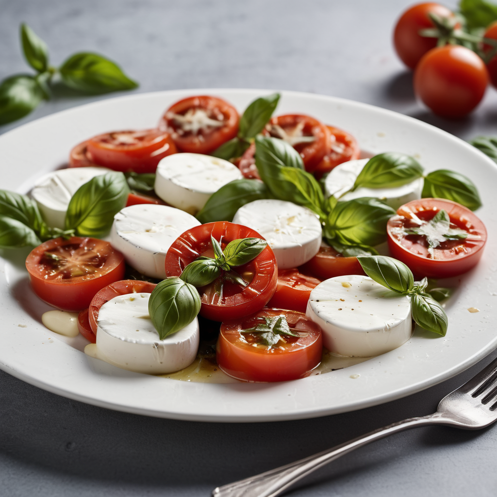

Hozzávalók:
- 1 mozzarella sajt, szeletelve
- 1 Érett paradicsom, szeletelve
- 2 db Friss bazsalikomlevél
- 2 ek Extra szűz olívaolaj
- 2 ek Balsamicókrém vagy balzsamecet
- Só és frissen őrölt fekete bors ízlés szerint
Elkészítés:
- A szeletelt mozzarellát és paradicsomot egy tálban váltakozva rétegezzük.
- A tetejét megszórjuk friss bazsalikomlevéllel.
- Sózzuk, borsozzuk.
- Locsoljuk meg extra szűz olívaolajjal és balsamicókrémmel vagy balzsamecettel.
- Jó étvágyat!